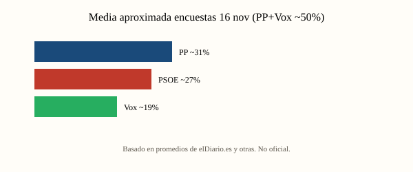

España · elecciones · 16 de noviembre de 2026
Las encuestas sitúan a PP y Vox con mayoría absoluta a 13 días del 29N.

Lo que coinciden los medios
A 13 días de las elecciones generales del 29 de noviembre de 2026, el promedio de sondeos privados sitúa la suma de Partido Popular y Vox por encima de la mayoría absoluta (176 escaños). El promedio de elDiario.es de 16 de noviembre coloca a PP+Vox en torno a 193 escaños. El PP se mueve alrededor del 31 % y el PSOE alrededor del 27 %. Vox ronda el 19 %. Estas cifras proceden de la media de los últimos estudios de cada instituto; no son un recuento oficial.
La campaña continúa con actos de Feijóo, Sánchez y Abascal. Pedro Sánchez recibió a Luiz Inácio Lula da Silva en La Moncloa. Yolanda Díaz anunció una subida del SMI. Ninguno de estos hechos altera el calendario: las urnas se abren el 29 de noviembre y los resultados oficiales los certifica la Junta Electoral Central.
Lo que es solo una cita
Las declaraciones de los candidatos sobre quién “ganará” o sobre mayorías “garantizadas” son afirmaciones de campaña. Las encuestas tienen margen de error, efecto casa y cocina. El CIS, organismo público, ha publicado históricamente cifras distintas de las privadas. Un promedio de 193 escaños no es un resultado; es una estimación a fecha de hoy.
Mecanismo que el lector necesita
El Congreso tiene 350 escaños. La mayoría absoluta es 176. El sistema electoral español (d’Hondt en circunscripciones provinciales) favorece a los partidos grandes y penaliza a los pequeños fuera de sus feudos. Por eso un 50 % de voto combinado de PP+Vox se traduce con facilidad en más de 176 escaños. Las encuestas de voto se convierten en escaños mediante simulaciones que incorporan la distribución territorial; esas simulaciones varían entre institutos.
Quedan 13 días. Eventos de campaña, debates y posibles noticias pueden mover unos puntos. Históricamente, las encuestas finales han acertado el orden de los dos primeros partidos en la mayoría de comicios, pero han errado el tamaño de la mayoría en algunas ocasiones. El único número que cuenta el 30 de noviembre es el escrutinio oficial.
Lo que esta historia no es
No es un resultado electoral. No es una predicción de gobierno. No es un juicio sobre la legitimidad de ningún bloque. La fotografía es del exterior del edificio del Congreso; no muestra a ningún candidato ni a ninguna urna.

Artículos fuente y puntuaciones
| Medio | Titular | T | N | C |
|---|---|---|---|---|
| elDiario.es | La media de encuestas: la izquierda crece y la derecha cae, pero mantiene la mayoría | 94 | -8 | 85 |
| Mapa Electoral | Encuestas 29N: el PP gana en 17 de 19; con Vox, mayoría absoluta en 16 de 18 | 95 | 0 | 95 |
Héroe: Wikimedia Commons, exterior del Congreso. Gráfico SVG local. Sin CDN de agencias de noticias como única fuente.